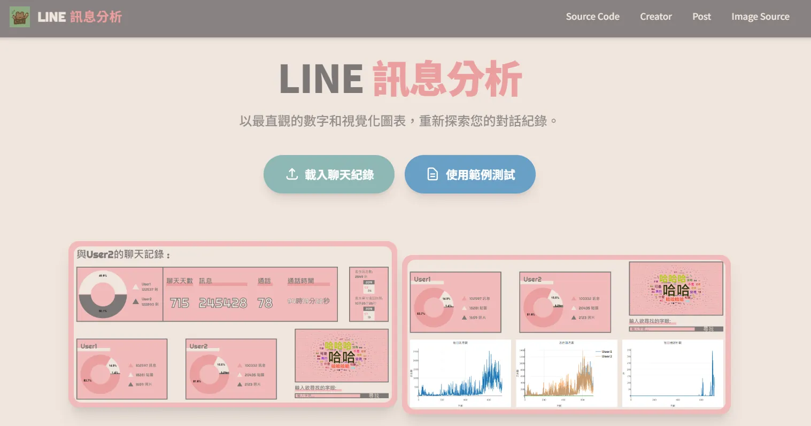
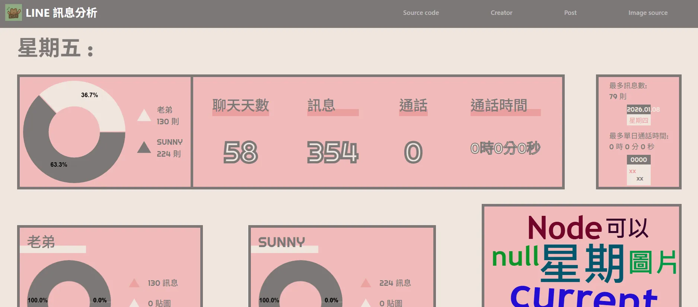
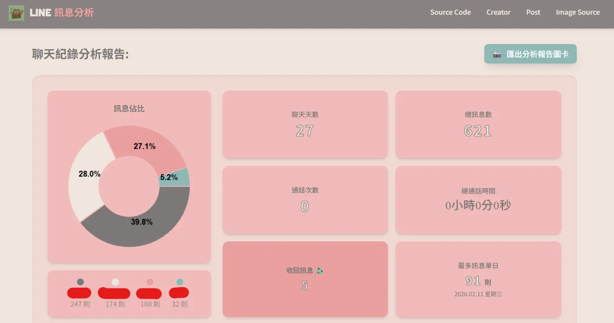

本專案針對開源工具 line-message-analyzer 進行底層架構與前端介面的深度重構。該工具原具備基礎的訊息統計視覺化功能，但在長期缺乏維護下，暴露出硬體編碼 (Hardcoding) 限制與系統擴展性瓶頸。本次介入旨在透過現代化技術棧，解決核心邏輯缺陷並提升程式碼的可維護性。
# 介面架構重構與渲染優化
原始專案依賴高度耦合的 Bootstrap 樣式，導致組件層級扁平且缺乏跨裝置的自適應能力。重構策略如下：
- 樣式系統遷移： 全面導入 Tailwind CSS，透過 Utility-first 原則實現樣式與結構的邏輯分離。
- 響應式網格建構： 導入 Flexbox 佈局模型，依據視窗斷點 (Breakpoints) 動態分配容器寬度，解決行動裝置的渲染破版問題。


# 核心突破：資料結構與渲染邏輯解耦
原系統最致命的架構缺陷在於「渲染節點綁死資料數量」。系統僅宣告了 memberCanvas1 與 memberCanvas2 兩個實體 DOM，導致高於兩人維度的群組資料在渲染層被強制截斷。


解決方案為確立「資料驅動渲染 (Data-Driven Rendering)」機制：
-
解析層動態註冊
重寫
analyze.js模組。掃描文本時，系統會自動提取未重複的實體名稱 (Entities)，並於狀態池中動態建立相應的統計陣列，徹底消除人數上限之約束。 - 渲染層映射輸出 前端接收資料物件後，透過迴圈邏輯動態生成卡片容器與 Canvas 實例，並結合前述之 flex-wrap 網格，實現 N-Member 資料集的無縫展現。
# 系統架構現代化與狀態管理
原專案充斥全域變數汙染與過時的 DOM 操作語法。為確保系統穩定性，執行了以下工程規範：
狀態集中管理 (State Centralization)
const AppState = {
chatname: "",
members: [],
memberStats: {},
totalMessages: 0,
unsent: 0
};動態實例生成 (Dynamic Instantiation)
sortedKeys.forEach((member, i) => {
let canvasId = `member_${i}`;
generateDonut(canvasId,
[mTxt, st.stickers, st.photos],
['#EB9F9F', '#F0E5DE', '#7C7877']
);
});- 資料精確度修復： 修正「收回訊息」判讀之邏輯漏洞，重構 X 軸時間序列的生成演算法。
- 依賴環境淨化： 移除高度冗餘的 jQuery 依賴，改採原生 Vanilla JS 實作，降低系統封裝層級與渲染負擔。
- 測試隔離 (TDD 原則)： 建立
debug.js測試環境，確保 Node.js 層的核心運算邏輯在注入前端前已通過驗證。
# AI 代理協作的邊界與工程規範
本次重構高度依賴 AI 進行輔助開發，此過程實證了生成式 AI 於軟體工程中的協作特性與風險：
在架構初始化 (Prototyping)、正規表達式推演與冗餘代碼重構上，AI 能顯著壓縮開發耗時。
AI 缺乏全局狀態的深度理解，極易發生「修復單點臭蟲卻破壞全域結構」之問題，或擅自注入未授權之功能模組。
開發者必須絕對掌握「架構決策權」。任務應嚴格拆分為原子化單元 (Atomic Commits)，並建立階段性回溯點，杜絕 AI 大規模覆寫核心邏輯。
# 待解決技術債與擴充藍圖
本次重構確立了高穩定度的底層骨架，未來系統優化將針對以下已知邊界條件進行修復與功能擴充：
Issue #2 & #4：非結構化文本特例處理
- 名稱字串斷裂： 實體名稱包含空格 (如 "John Doe") 導致解析指針異常。已初步導入 Tab 分隔機制，未來需引入動態詞綴分析。
- 時間戳記混淆： 英文匯出格式 (AM/PM) 無法相容既有正則表達式。需開發自適應語系偵測模組，動態切換匹配邏輯。
系統擴展維度分析
# 開源協作與系統演進
開源專案的價值在於邏輯的持續驗證與架構的無止境優化。若您對數據清洗邏輯或前端視覺架構具備更佳之實作方案，歡迎介入此專案之迭代：
- Repository： 專案原始碼已發布於 GitHub。
- Pull Requests： 歡迎提交任何優化底層效能或擴充功能之 PR。
- Issue Tracking： 任何異常邊界條件或技術討論，皆可透過 Issue 系統發起。
致謝原始作者之基礎貢獻。軟體工程的本質即是不斷建立秩序以對抗系統熵增，期待此工具能在社群的參與下，收斂至更高的穩定狀態。